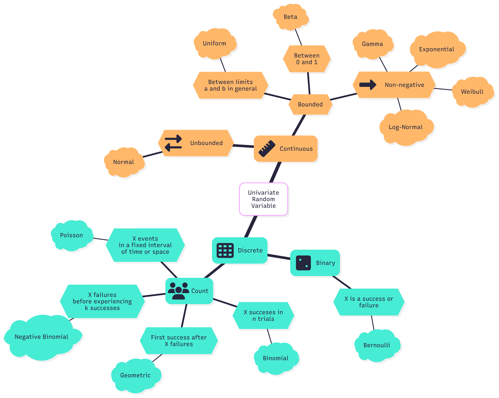
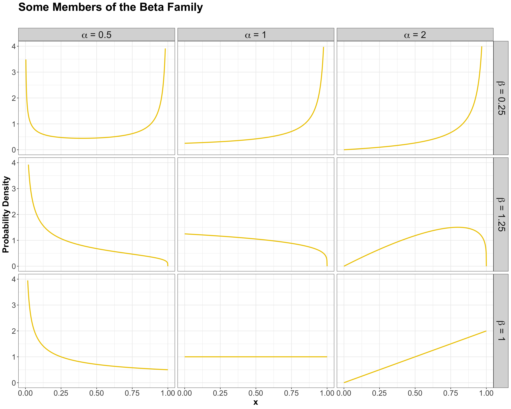
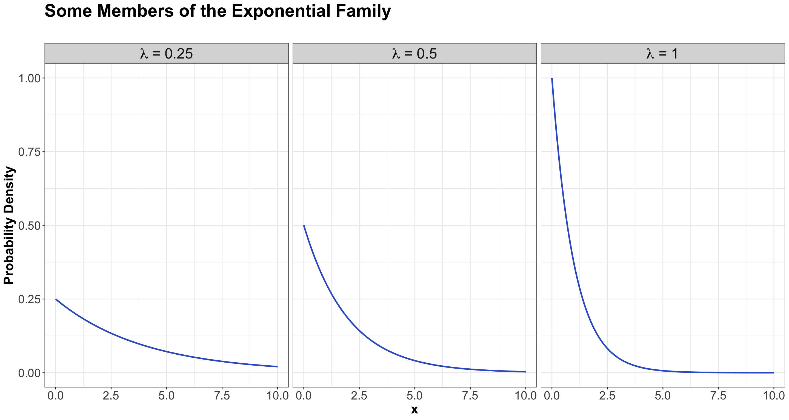
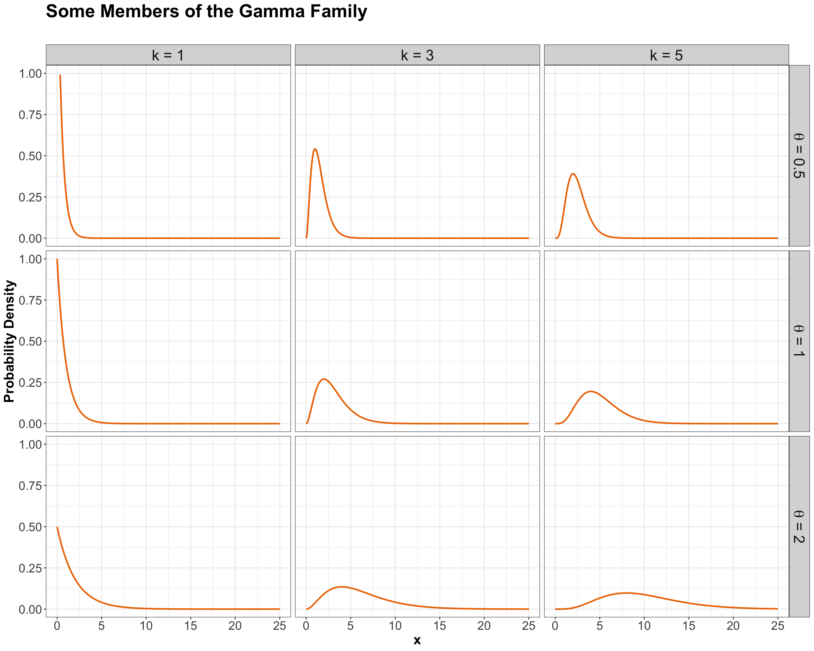
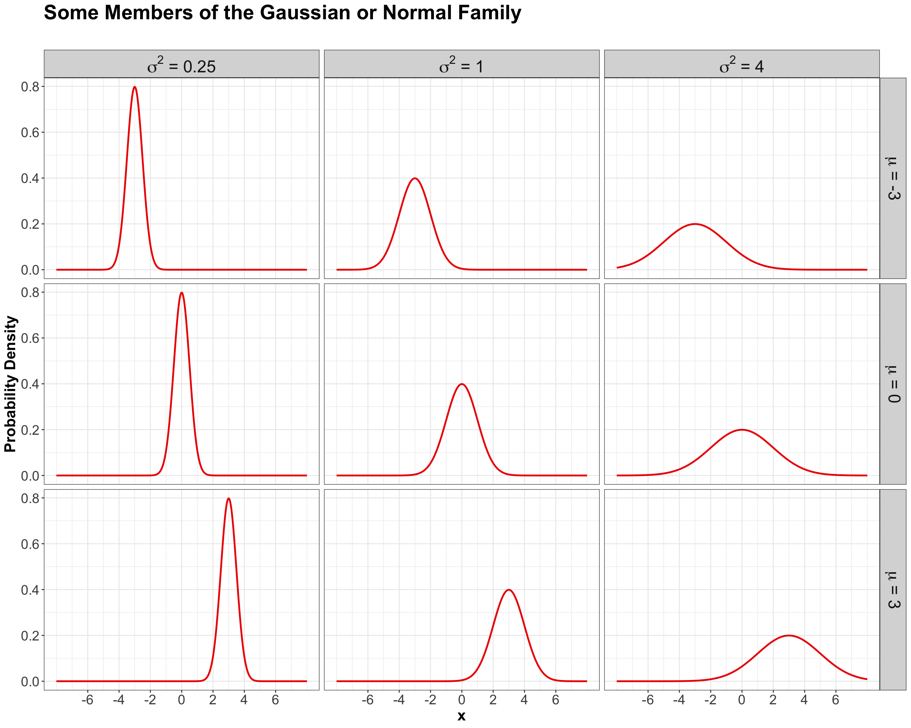
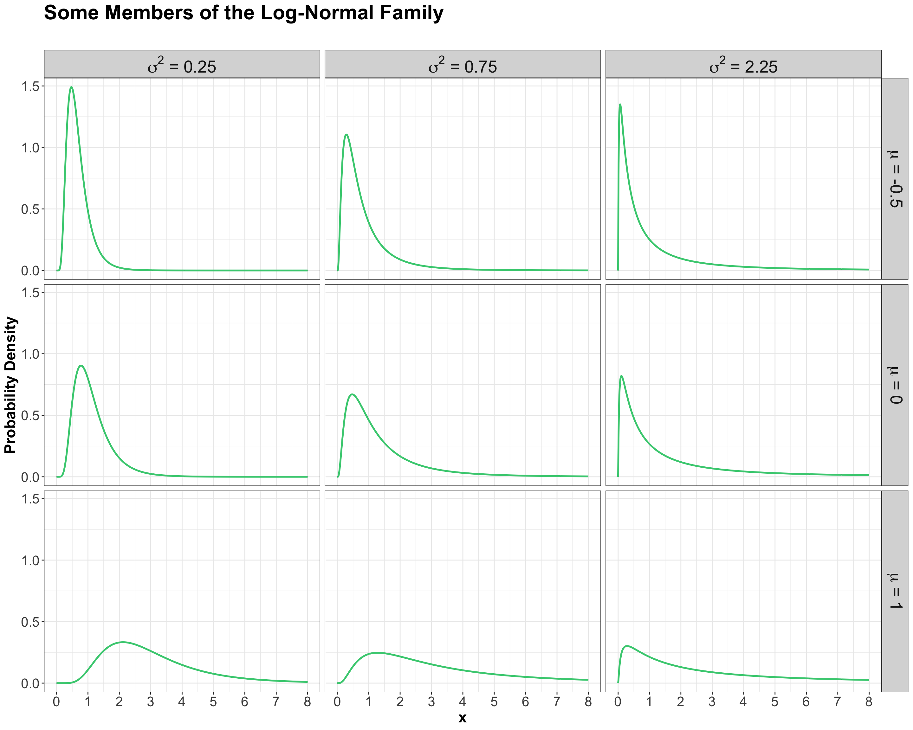
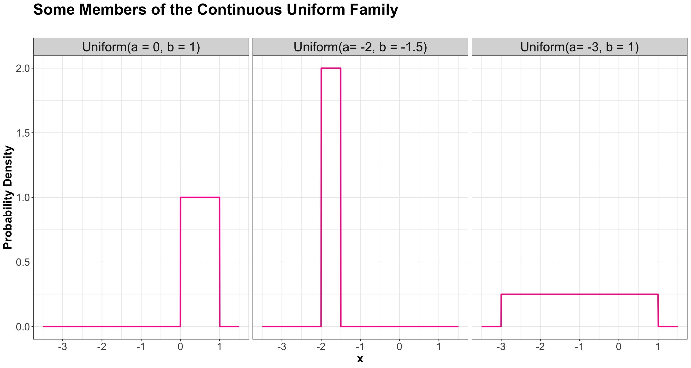
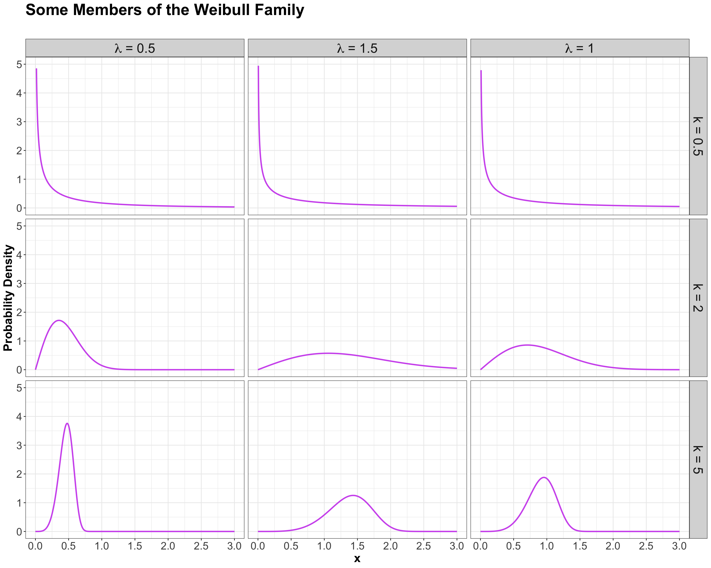

answer_ppois_1 <- 1 - ppois(q = 10, lambda = 15, lower.tail = TRUE) # lower.tail = TRUE indicates P(X <= q)
answer_ppois_1 <- round(answer_ppois_1, 3) # Rounding to three decimal places
answer_ppois_1[1] 0.882The mind map in Figure 1 summarizes all the univariate distributions to be covered in this course.

It is a random variable \(X\) that is binary as follows
\[X = \begin{cases} 1 \; \; \; \; \text{if there is a success},\\ 0 \; \; \; \; \mbox{otherwise}. \end{cases}\]
The value \(1\) has a probability of \(0 \leq p \leq 1\), whereas the value \(0\) has a probability of \(1 - p\).
Then, \(X\) is said to have a Bernoulli distribution:
\[X \sim \text{Bernoulli}(p).\]
A Bernoulli distribution is characterized by the PMF
\[P(X = x \mid p) = p^x (1 - p)^{1 - x} \quad \text{for} \quad x = 0, 1.\]
The mean of a Bernoulli random variable is defined as:
\[\mathbb{E}(X) = p.\]
The variance of a Bernoulli random variable is defined as:
\[\text{Var}(X) = p(1 - p).\]
Let \(X\) be the number of succcesses after \(n\) independent Bernoulli trials with probability of success \(0 \leq p \leq 1\).
Then, \(X\) is said to have a Binomial distribution:
\[X \sim \text{Binomial} \left( n, p \right).\]
A Binomial distribution is characterized by the PMF
\[P \left( X = x \mid n, p \right) = {n \choose x} p^x (1 - p)^{n - x} \quad \text{for} \quad x = 0, 1, \dots, n.\]
Term \({n \choose x}\) indicates the total number of combinations for \(x\) successes out of \(n\) trials:
\[{n \choose x} = \frac{n!}{x!(n - x)!}.\]
The mean of a Binomial random variable is defined as:
\[\mathbb{E}(X) = n p.\]
The variance of a Binomial random variable is defined as:
\[\text{Var}(X) = n p (1 - p).\]
Let \(X\) be the number of failed independent Bernoulli trials before experiencing the first success.
Then, \(X\) is said to have a Geometric distribution:
\[X \sim \text{Geometric} (p).\]
A Geometric distribution is characterized by the PMF
\[P(X = x \mid p) = p (1 - p)^x \quad \text{for} \quad x = 0, 1, \dots\]
The mean of a Geometric random variable is defined as:
\[\mathbb{E}(X) = \frac{1 - p}{p}.\]
The variance of a Geometric random variable is defined as:
\[\text{Var}(X) = \frac{1 - p}{p^2}.\]
Let \(X\) be the number of failed independent Bernoulli trials before experiencing \(k\) independent successes.
Then, \(X\) is said to have a Negative Binomial distribution:
\[X \sim \text{Negative Binomial} (k, p).\]
A Negative Binomial distribution is characterized by the PMF
\[P(X = x \mid k, p) = {k - 1 + x \choose x} p^k (1 - p)^x \quad \text{for} \quad x = 0, 1, \dots\]
The mean of a Negative Binomial random variable is defined as:
\[\mathbb{E}(X) = \frac{k(1 - p)}{p}.\]
The variance of a Negative Binomial random variable is defined as:
\[\text{Var}(X) = \frac{k(1 - p)}{p^2}.\]
Let \(X\) be the number of events happening in a fixed interval of time or space at some average rate \(\lambda\).
Then, \(X\) is said to have a Poisson distribution:
\[X \sim \text{Poisson} (\lambda).\]
A Poisson distribution is characterized by the PMF
\[P(X = x \mid \lambda) = \frac{\lambda^x \exp(-\lambda)}{x!} \quad \text{for} \quad x = 0, 1, \dots\]
The mean of a Poisson random variable is defined as:
\[\mathbb{E}(X) = \lambda.\]
The variance of a Poisson random variable is defined as:
\[\text{Var}(X) = \lambda.\]
R FunctionsThe Poisson distribution has some handy R functions to perform different probabilistic computations. Let us check them via some quick example.
Suppose that we have the following random variable:
\[X = \text{Number of orders received at an online store during the weekend.}\]
Note we have a count-type random variable denoting the number of events (i.e., orders) happening in a fixed interval of time (i.e., the weekend). Let us assume that, in average during the weekend, we receive 15 orders. We can model \(X\) as a Poisson random variable:
\[X \sim \text{Poisson}(\lambda = 15).\]
ppois()Given the above random variable modelling, let us answer the following:
We can manually compute these probabilities via the Poisson PMF equation. Nevertheless, let us try a quicker way via ppois(). This function allows us to compute probabilities as follows:
q for the quantile corresponding to \(P(X \leq \texttt{q})\).lambda corresponds to \(\lambda\).answer_ppois_1 <- 1 - ppois(q = 10, lambda = 15, lower.tail = TRUE) # lower.tail = TRUE indicates P(X <= q)
answer_ppois_1 <- round(answer_ppois_1, 3) # Rounding to three decimal places
answer_ppois_1[1] 0.882The above code corresponds to:
\[\begin{align*} P(X > 10) &= 1 - P(X \leq 10) \\ & = 0.882. \end{align*}\]
Now, for the second question:
answer_ppois_2 <- ppois(q = 16, lambda = 15, lower.tail = TRUE) -
ppois(q = 12, lambda = 15, lower.tail = TRUE)
answer_ppois_2 <- round(answer_ppois_2, 3)
answer_ppois_2[1] 0.397The above code corresponds to:
\[\begin{align*} P(12 \leq X \leq 16) &= P(X \leq 16) - P(X \leq 12) \\ & = 0.397. \end{align*}\]
qpois()It is also possible to obtain the \(p\)-quantile \(Q(p)\) associated with the probability \(P\left[X \leq Q(p) \right]\). Suppose we want to obtain the \(0.6\)-quantile, i.e. \(Q(0.6)\), for this specific example. Function qpois() allows us to compute this quantile as follows:
p for the corresponding probability \(p\).lambda corresponds to \(\lambda\).answer_qpois <- qpois(p = 0.6, lambda = 15)
answer_qpois <- answer_qpois
answer_qpois[1] 16The above code corresponds to:
\[\begin{gather*} P\left[X \leq Q(0.6) \right] = 0.6 \\ P\left[X \leq 16 \right] = 0.6. \end{gather*}\]
Let \(X\) be the random discrete outcome of a finite set of \(N\) outcomes. Suppose each outcome has a numeric label whose lower and upper bounds are \(a\) and \(b\), respectively. Then, \(X\) is said to have a discrete Uniform distribution:
\[X \sim \text{Discrete Uniform} (a, b).\]
A discrete Uniform distribution is characterized by the PMF
\[P(X = x \mid a, b) = \frac{1}{N} \quad \text{for} \quad x = a, \dots, b.\]
The mean of a discrete Uniform random variable is defined as:
\[\mathbb{E}(X) = \frac{a + b}{2}.\]
The variance of a discrete Uniform random variable is defined as:
\[\text{Var}(X) = \frac{N^2 - 1}{12}.\]
The Beta family of distributions is defined for random variables taking values between \(0\) and \(1\), so is useful for modelling the distribution of proportions. This family is quite flexible, and has the Uniform distribution as a special case. It is characterized by two positive shape parameters, \(\alpha > 0\) and \(\beta > 0\).
The Beta family is denoted as
\[X \sim \operatorname{Beta}(\alpha, \beta).\]
The density is parameterized as
\[f_X(x \mid \alpha, \beta) = \frac{\Gamma(\alpha + \beta)}{\Gamma(\alpha) \Gamma(\beta)} x^{\alpha - 1} (1 - x)^{\beta - 1} \qquad \text{for} \quad 0 \leq x \leq 1,\]
where \(\Gamma(\cdot)\) is the Gamma function.
Here are some examples of densities:

The mean of a Beta random variable is defined as:
\[\mathbb{E}(X) = \frac{\alpha}{\alpha + \beta}.\]
The variance of a Beta random variable is defined as:
\[\text{Var}(X) = \frac{\alpha \beta}{(\alpha + \beta)^2 (\alpha + \beta + 1)}.\]
Members of this family need to have all Gaussian marginals, and their dependence has to be Gaussian dependence. Gaussian dependence is obtained as a consequence of requiring that any linear combination of Gaussian random variables is also Gaussian.
To characterize the bivariate Gaussian family (i.e., \(d = 2\) involved random variables), we need the following parameters:
That is five parameters altogether; and only one of them, Pearson correlation or covariance, is needed to specify the dependence part in a bivariate Gaussian family.
Then, we can construct two objects that are useful for computations: a mean vector \(\boldsymbol{\mu}\) and a covariance matrix \(\boldsymbol{\Sigma}\), where
\[\boldsymbol{\mu}=\begin{pmatrix} \mu_X \\ \mu_Y \end{pmatrix}\]
and
\[\boldsymbol{\Sigma} = \begin{pmatrix} \sigma_X^2 & \sigma_{XY} \\ \sigma_{XY} & \sigma_Y^2 \end{pmatrix}.\]
Note that the covariance matrix is always defined as above. Even if we are given the correlation \(\rho_{XY}\) instead of the covariance \(\sigma_{XY}\), we would then need to calculate the covariance as
\[\sigma_{XY} = \rho_{XY} \sigma_X \sigma_Y\]
before constructing the covariance matrix. However, there is another matrix that is sometimes useful, called the correlation matrix \(\mathbf{P}\). Firstly, let us recall the formula of the Pearson correlation between \(X\) and \(Y\):
\[\rho_{XY} = \frac{\operatorname{Cov}(X, Y)}{\sqrt{\operatorname{Var}(X)\operatorname{Var}(Y)}} = \frac{\sigma_{XY}}{\sqrt{\sigma_X^2 \sigma_Y^2}}.\]
It turns out that:
\[\begin{gather*} \rho_{XX} = \frac{\operatorname{Cov}(X, X)}{\sqrt{\operatorname{Var}(X)\operatorname{Var}(X)}} = \frac{\text{Var}(X)}{\sqrt{\sigma^2_X \sigma^2_X}} = \frac{\sigma^2_X}{\sigma^2_X} = 1 \\ \rho_{YY} = \frac{\operatorname{Cov}(Y, Y)}{\sqrt{\operatorname{Var}(Y)\operatorname{Var}(Y)}} = \frac{\text{Var}(Y)}{\sqrt{\sigma^2_Y \sigma^2_Y}} = \frac{\sigma^2_Y}{\sigma^2_Y} = 1. \end{gather*}\]
Thus, correlation matrix \(\mathbf{P}\) is defined as:
\[\begin{align*} \mathbf{P} &= \begin{pmatrix} \frac{\sigma^2_X}{\sigma^2_X} & \frac{\sigma_{XY}}{\sqrt{\sigma_X^2 \sigma_Y^2}} \\ \frac{\sigma_{XY}}{\sqrt{\sigma_X^2 \sigma_Y^2}} & \frac{\sigma^2_Y}{\sigma^2_Y} \end{pmatrix} \\ &= \begin{pmatrix} \rho_{XX} & \rho_{XY} \\ \rho_{XY} & \rho_{YY} \end{pmatrix} \\ &= \begin{pmatrix} 1 & \rho_{XY} \\ \rho_{XY} & 1 \end{pmatrix}. \end{align*}\]
The density can be parameterized as
\[ \begin{align*} f_{XY}\left(x, y \mid \mu_X, \mu_Y, \sigma^2_X, \sigma^2_Y, \rho_{XY}\right) &= \frac{1}{2 \pi \sigma_X \sigma_Y \sqrt{1 - \rho_{XY}^2}} \times \\ & \qquad \exp \Bigg\{ - \frac{1}{2 \left( 1 - \rho_{XY}^2 \right)} \Bigg[ \bigg( \frac{x - \mu_X}{\sigma_X} \bigg)^2 + \\ & \qquad \quad \bigg( \frac{y - \mu_Y}{\sigma_Y} \bigg)^2 - 2 \rho_{XY} \frac{( x - \mu_X) ( y - \mu_Y)}{\sigma_X \sigma_Y} \Bigg] \Bigg\}. \end{align*} \]
The Exponential family is for positive random variables, often interpreted as wait time for some event to happen. Characterized by a memoryless property, where after waiting for a certain period of time, the remaining wait time has the same distribution.
The family is characterized by a single parameter, usually either the mean wait time \(\beta > 0\), or its reciprocal, the average rate \(\lambda > 0\) at which events happen.
The Exponential family is denoted as
\[X \sim \operatorname{Exponential}(\beta),\]
or
\[X \sim \operatorname{Exponential}(\lambda).\]
The density can be parameterized as
\[f_X(x \mid \beta) = \frac{1}{\beta} \exp(-x / \beta) \qquad \text{for} \quad x \geq 0\]
or
\[f_X(x \mid \lambda) = \lambda \exp(-\lambda x) \qquad \text{for} \quad x \geq 0.\]
The densities from this family all decay starting at \(x = 0\) for rate \(\lambda\):

Using a \(\beta\) parameterization, the mean of an Exponential random variable is defined as:
\[\mathbb{E}(X) = \beta.\]
On the other hand, using a \(\lambda\) parameterization, the mean of an Exponential random variable is defined as:
\[\mathbb{E}(X) = 1 / \lambda.\]
Using a \(\beta\) parameterization, the variance of an Exponential random variable is defined as:
\[\text{Var}(X) = \beta^2.\]
On the other hand, using a \(\lambda\) parameterization, the variance of an Exponential random variable is defined as:
\[\text{Var}(X) = 1 / \lambda^2.\]
Another useful two-parameter family with support on non-negative numbers. One common parameterization is with a shape parameter \(k > 0\) and a scale parameter \(\theta > 0\).
The Gamma family can be denoted as
\[X \sim \operatorname{Gamma}(k, \theta).\]
The density is parameterized as
\[f_X(x \mid k, \theta) = \frac{1}{\Gamma(k) \theta^k} x^{k - 1} \exp(-x / \theta) \qquad \text{for} \quad x \geq 0,\]
where \(\Gamma(\cdot)\) is the Gamma function.
Here are some densities:

The mean of a Gamma random variable is defined as:
\[\mathbb{E}(X) = k \theta.\]
The variance of a Gamma random variable is defined as:
\[\text{Var}(X) = k \theta^2.\]
Probably the most famous family of distributions. It has a density that follows a “bell-shaped” curve. It is parameterized by its mean \(-\infty < \mu < \infty\) and variance \(\sigma^2 > 0\). A Normal distribution is usually denoted as
\[X \sim \mathcal N\left(\mu, \sigma^2\right).\]
The density is
\[f_X(x \mid \mu, \sigma^2) = \frac{1}{\sqrt{2\pi \sigma^2}} \exp \left[-\frac{(x - \mu)^2}{2\sigma^2} \right] \qquad \text{for} \quad -\infty < x < \infty.\]
Here are some densities from members of this family:

The mean of a Normal random variable is defined as:
\[\mathbb{E}(X) = \mu.\]
The variance of a Normal random variable is defined as:
\[\text{Var}(X) = \sigma^2.\]
A random variable \(X\) is a Log-Normal distribution if the transformation \(\log(X)\) is Normal. This family is often parameterized by the mean \(-\infty < \mu < \infty\) and variance \(\sigma^2 > 0\) of \(\log X\). The Log-Normal family is denoted as
\[X \sim \operatorname{Log-Normal}\left(\mu, \sigma^2\right).\]
The density is
\[f_X(x \mid \mu, \sigma^2) = \frac{1}{x\sqrt{2\pi \sigma^2}} \exp \left\{ -\frac{[\log(x) - \mu]^2}{2\sigma^2} \right\} \qquad \text{for} \quad x \geq 0.\]
Here are some densities from members of this family:

The mean of a Log-Normal random variable is defined as:
\[\mathbb{E}(X) = \exp{\left[ \mu + \left( \sigma^2 / 2 \right) \right]}.\]
The variance of a Log-Normal random variable is defined as:
\[\text{Var}(X) = \exp{\left[ 2 \left( \mu + \sigma^2 \right) \right]} - \exp{\left( 2\mu + \sigma^2 \right)}.\]
A continuous Uniform distribution has an equal density in between two points \(a\) and \(b\) (for \(a < b\)), and is usually denoted by
\[X \sim \operatorname{Continuous Uniform}(a, b).\]
That means that there are two parameters: one for each end-point. A reference to a “Uniform distribution” usually implies continuous uniform, as opposed to discrete uniform.
The density is
\[f_X(x\mid a, b) = \frac{1}{b - a} \qquad \text{for} \quad a \leq x \leq b.\]
Here are some densities from members of this family:

The mean of a continuous Uniform random variable is defined as:
\[\mathbb{E}(X) = \frac{a + b}{2}.\]
The variance of a continuous Uniform random variable is defined as:
\[\text{Var}(X) = \frac{(b - a)^2}{12}.\]
A generalization of the Exponential family, which allows for an event to be more likely the longer you wait. Because of this flexibility and interpretation, this family is used heavily in survival analysis when modelling time until an event.
This family is characterized by two parameters, a scale parameter \(\lambda > 0\) and a shape parameter \(k > 0\) (where \(k = 1\) results in the Exponential family).
The Weibull family is denoted as
\[X \sim \operatorname{Weibull}(\lambda, k).\]
The density is parameterized as
\[f_X(x \mid \lambda, k) = \frac{k}{\lambda} \left( \frac{x}{\lambda} \right)^{k - 1} \exp^{-(x / \lambda)^k} \qquad \text{for} \quad x \geq 0.\]
Here are some examples of densities:

The mean of a Weibull random variable is defined as:
\[\mathbb{E}(X) = \lambda \Gamma \left( 1 + \frac{1}{k} \right).\]
The variance of a Weibull random variable is defined as:
\[\text{Var}(X) = \lambda^2 \left[ \Gamma \left( 1 + \frac{2}{k} \right) - \Gamma^2 \left( 1 + \frac{1}{k} \right) \right].\]